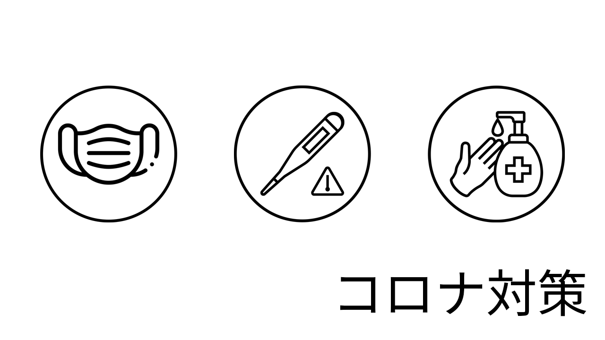

HOME
開催情報
競技情報
暑さ対策
コロナ対策
アクセス
注意事項

第26回スポーツフェスティバルコロナ感染防止について
コロナ対策において、学校行事として特別なイベントとなります。普段実施しているコロナ対策に加え徹底した。対策を施すこととなります。ご協力をお願いします。
事前対応
1週間前：人の密集する場所への行動を控える、発熱・咳・のどの痛み・頭痛・強い倦怠感等がある場合は、受診する。
健康的な生活を実施し免疫力を高める。
当日
必ず家を出る前に検温を実施し、37.5℃以上の場合は、参加を取りやめる。
検温後必ずリーバーへの入力。
自宅よりマスクを着用（マスクは予備も持参）※マスクは鼻、口を覆うように装着。
東京ドーム集合時の整列は、間隔をあけて並ぶ。
入場時には、検温器2台により検温（予備として非接触型検温計を準備）
入場時手消毒（担当者による吹きかけ及び固定）・座席は、１つ飛ばしに着席。
集合・入場は時間差により実施、それに合わせ女子更衣室も時間差とする。
東京ドーム内での食を禁止とする (朝食・昼食・間食・嗜好品等)
グランドでは、養生内以外は消毒禁止のため、消毒液設置場所を設定。
ドリンクエリアについて、随時消毒を行っているスタッフにより、コップに注ぎ配布。
マスクを外しているときは会話禁止。
競技
競技前、競技後に手消毒を徹底。
集合、解散後も密にならない様にスタッフにより徹底 。
用具の消毒も徹底する（養生のある所で実施）
中止について（コロナ対策による）
蔓延防止等政府発表のイベント開催基準に準じる。